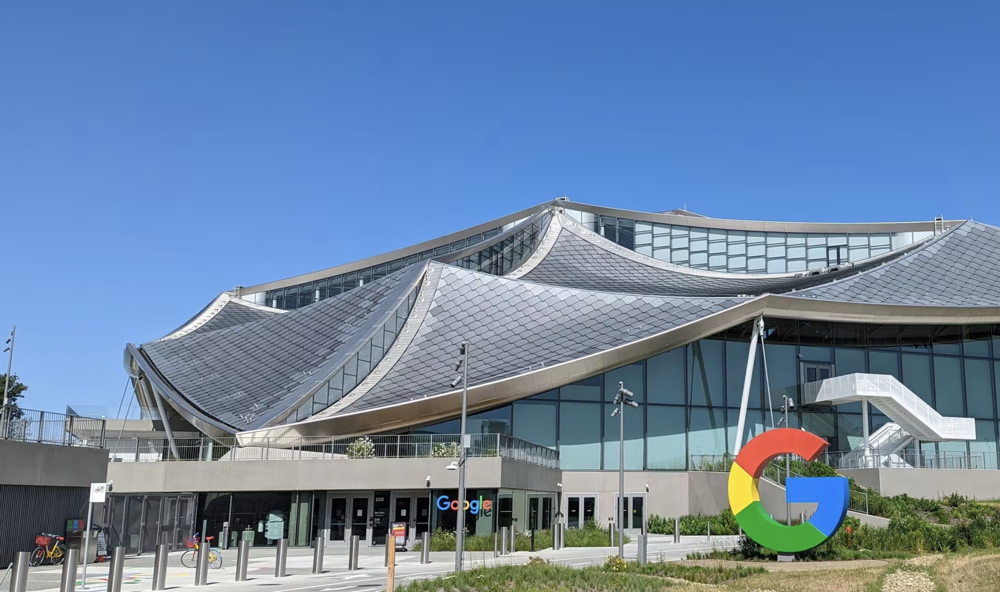

2020년도부터 AI, ChatGPT라는 키워드가 등장하면서 IT 산업에 대한 관심이 부쩍 높아졌습니다. 중앙대학교에서도 시대에 발맞춰 소프트웨어학부, AI학부가 신설되었고, 관련 직종을 꿈꾸는 학생들도 꾸준히 증가하고 있습니다. 오늘의 인터뷰 주인공은 22학번 지식경영학부에 재학했던 김지연 졸업생입니다.
졸업한 지 약 5년이 지난 김지연 졸업생은 현재 캘리포니아 실리콘밸리에 위치한 구글에서 근무하고 있다고 하는데요. 개발자를 꿈꾸는 학생들에게 흥미로운 주제를 갖고 김지연 졸업생을 만나보았습니다.
Chapter 1. 김지연: 개발자를 꿈꾸다
안녕하세요. 저는 중앙대학교 경영경제대학 지식경영학부 22학번 졸업생 김지연이라고 합니다. 아시다시피 지식경영학부는 재직자 특별전형으로 모집되어 일과 학습을 병행하는 학과인데요. 스무 살부터 개발자라는 직업으로 근무를 시작하여 벌써 13년 차 개발자입니다.
저는 사실 어렸을 때부터 '개발자가 되어야지!' 했던 건 아니었어요. 개발자를 목표로 해왔던 건 아니고, 컴퓨터를 워낙 좋아했다 보니 컴퓨터를 하는 직업을 갖고 싶다는 생각을 했어요. 고등학교 진학을 앞둔 시점에 내가 뭘 좋아하나 생각해 보았더니 정말 컴퓨터밖에 없더라고요. 그래서 자연스럽게 프로그래밍을 배울 수 있는 미림 마이스터고등학교에 진학하게 되었어요.
Chapter 2. 실리콘밸리: 개발자들의 꿈의 동산
캘리포니아에 위치한 실리콘밸리는 우리가 알만한 애플, 구글, 페이스북 등 빅테크 기업이 본사를 두고 있는 곳이에요. 그렇다 보니 자연스럽게 개발자들이 선망하는 곳으로 생각되는 것 같아요. 실제로 업무 인프라나 훌륭한 동료들이 많기 때문에 이곳에 있는 것만으로도 긍정적인 자극을 많이 받게 되는 것 같아요.

처음부터 '실리콘밸리 취업'이 목표였다기 보다 조금 더 넓은 시야를 가질 수 있는 해외 취업이 목표였던 것 같아요.
해외 취업에 관심을 갖게 되었던 이유는 2022년에(중앙대학교 1-1 학기 마치고) 좋은 기회로 해외 연수의 기회가 주어졌어요.
6개월 동안 영국 런던에서 프로그래밍 수업을 듣고 함께 팀 프로젝트를 해볼 수 있는 아주 좋은 기회였어요.
휴학을 하고 6개월간 영국에서 지내면서 특히 다른 나라의 개발자와 이야기하면서 굉장히 좋은 영향을 많이 받았어요.
특히나 이민자도 많고 더욱 다양한 사람들이 모여 사는 런던이었기 때문에 기존에 갖고 있던 고정관념을 부수고 더 넓은 가치관을 가질 수 있는 시간이었어요.
가장 기억에 남는 에피소드는, 팀 프로젝트를 하다가 알고리즘을 적용해야 하는 부분이 있었어요. 한국에서는 알고리즘 동아리나 학원에서 푸는 공식을 반복해서 주입해 주거든요.
모두 공식은 어느 정도 알고 있지만 그럼에도 그 친구들은 각자 푸는 방법을 생각해 보고 서로 공유해서 가장 좋은 방법을 선택해서 문제를 풀어나가더라고요.
그런 부분에서 그동안 회사에서 진행했던 프로젝트들과 차이를 많이 느꼈고, 제가 너무 당연하게 생각했던 정답이 아닌 되게 여러 방법으로 풀어낼 수 있구나. 하는 깨달음을 얻었어요.
Chapter 3. 해외 취업: 해외로의 발을 딛다
해외 취업을 목표로 삼고 당장의 현실과 이상의 차이에서 수많은 괴리감을 느끼기도 했는데요.
그땐 그냥 제가 지금 할 수 있는 것들을 꾸준하고 묵묵히 해왔던 것 같아요.
해외에서 일을 하려면 소통이 가장 중요하다 보니 20대 때 퇴근하고 영어학원을 갔던 기억이 나요.
또한 개발 산업 특성상 끊임없이 새로운 기술들이 출시되어서 트렌드를 학습하는 것도 매우 중요하다고 생각해요.
업무를 하면서도 IT 시장 트렌드를 학습하여 반영하려 노력했던 것이 큰 도움이 되었던 것 같습니다.
또, 저의 20대 때 마인드가 '말하는 대로' 였거든요. 스스로 삶을 계획해나가면서 내뱉었던 '중앙대학교 입학', '유럽 여행', '좋은 회사 취업' 등 계획했던 것을 운이 좋게도 이뤄왔고 앞으로 더 높은 목표를 설정할 수 있었던 마인드 셋이었던 것 같아요. 실제로 누군가에게 내뱉으면 더 달성하고자 하는 의지도 생겼던 것 같고요. 말하는 대로 이루어진다고 생각하니 자연스레 긍정적인 언행을 일삼을 수 있었어요. 20대 때도 해외 취업이라는 목표를 갖고 주변 사람들한테 여러 차례 말하기도 하고 실제 해외 취업한 모습을 꿈꾸기도 하며 실현해 왔어요.
Chapter 4. 삼십대: 삼십대의 나
소름 끼치게도 이제 30대에 접어들었는데요. 나이를 한 살 두 살 먹는 게 정말 싫었는데, 이상하게도 30대의 제 모습은 왠지 기대가 많이 됐어요.
20대를 지내면서도 학교를 다니는 내 모습, 직장을 다니는 내 모습이 너무 만족스러웠거든요. 이렇게 살다 보면 분명 30대 때 더 멋진 제가 되어있을 것만 같았어요.
늘 저는 제 미래에 대해 그림을 그려보았던 것 같은데 20대의 내가 상상했던 30대의 내 모습이 지금의 제 모습과 많이 다르지 않은 것 같아서
그것만으로도 개인적으론 성공한 삶이라고 생각해요.
좀 전에 20대 때 '말하는 대로'의 마인드로 살았다고 말씀드렸는데, 그러다 보니 현재에 포기해야 하는 것들도 어느 정도 감수하며 살았었어요.
잠을 충분히 못 자는 것은 물론, 체력적으로도 제 자신을 챙기지 못했던 것 같고요. 시간이 없다는 핑계로 주변 사람들에게도 소홀했던 것 같아요.
30대의 저는 조금 더 현재를 살자는 뜻에서 'Carpe diem'을 되뇌며 사는 것 같아요. 라틴어에서 유래되어 개인적으로 좋아하는 영화인 '죽은 시인의 사회'에서도 나오는 명대사인데요.
30대의 저는 불확실한 미래에 대한 준비나 걱정은 조금 내려두고 주어진 하루하루를 충실하게 살아가 보고자 합니다.
Chapter 5. 앞으로:
우선 가장 확실한 계획은 다음 달에 결혼을 앞두고 있고요💍. 20대 때는 치열하게 살았다면 30대 때는 조금 더 안정감을 찾는 것을 목표로 하려고 해요.
항상 새롭고 자극적인 것을 추구해왔던 저도 나이가 드니 안정을 찾게 되더라고요. 언제든 서로 의지할 수 있는 친구 같은 가정을 꾸리는데 시간을 보낼 것 같아요.
커리어적으로는 조금 더 전문성을 갖추고 싶다는 생각이에요. 경험하기 적합한 환경에 놓였으니 여기서도 처음 개발자로 일을 시작했던 그 마음가짐으로
많이 습득하려고 합니다. 여기서의 경험을 바탕으로 한층 더 성장할 수 있을 직거라 확신해요.